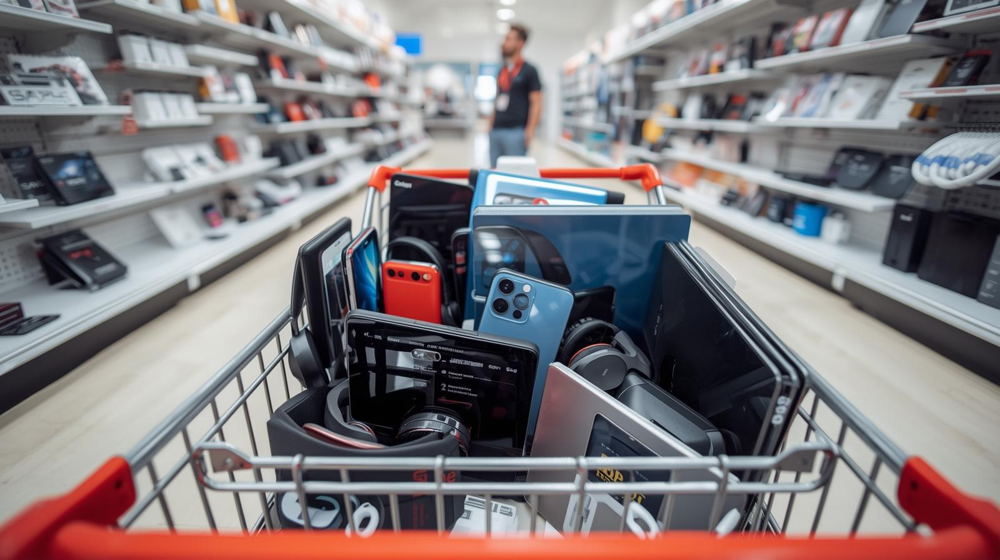

This project focused on tackling the underperformance of the sales department of a prominent international pharmaceutical company. Through analysis and visualisation, it was discovered that customer and geographical demographics were two major factors that affected sales and recommendations were given based on these findings. The recommendations helped increase sales to 15% in less than a year.
Tools Used: Microsoft Excel, Power BI

BrightCart, an online retail store, established to enable easier and more convenient shopping and delivering of electronics was struggling with making its online presence known and with negative customer experiences. This project was organised to analyse the company's data and give recommendations that would help tackle the company's challenges. The suggestions given boosted the company's online presence by 20%. There was also a 12% increase in positive feedback as the company was able to establish live trackers on their website to monitor peak times and maximize customer experience. Tools Used: Microsoft Excel and Tableau
Next Generation Corporation, a rapidly expanding IT business that develops hardware and software solutions, was faced with some challenges, including, increase in staff turnover, inconsistent monitoring and assessment of performance and concerns regarding compensation and recognition equity.This project aimed to track the performance of employees and departments, and study the cause of the high turn-over rate of employees in this renowed tech company Recommendations were suggested at the end of the analysis, leading to a 25% retention rate of employees within a year. Tool Used: SQL (PostgreSQL).

This project was carried out to analyse and address the issues that Sterling Heights Hospital was facing, which were patient dissatisfaction as a result of longer wait times and doctors work overload. The analyses, insights and recommendations helped the hospital to not only reduce the wait time for patients from 90 minutes to less than 30 minutes but also resulted in a 12% rise in profits within 6 months. Tools Used: Microsoft Excel and Power BI
Streamline Logistics Solutions company, established to ensure the quick and safe delivery of goods was faced with challenges ranging from customer dissatisfaction, to delay in delivery and incurring more cost, resulting in losses. The analysis, visualisation and recommendations suggested led to a 25% increase in their profitability as they were able to reduce delays and improve resource allocation. Live trackers now help customers stay updated about their deliveries and has improved customers experience by 18%. The forecast given from the analysis enabled the company track busy/peak days and optimise its delivery. Tools Used: Microsoft Excel
This project focused on the analysis of a chocolate business industry with branches all over Europe and headquarters in Brussels, including some online presence. Using Tableau for the analysis and visualisation, insights and recommendations were made to help improve their online presence, delivery success and salesperson productivity by 15%..
.jpg)
This was a group project where I collaborated with other data analysts and data consultants to analyse and give recommendations to an electronics firm, AfriTech that was faced with competition from similar brands, crisis management and resolution, reduced online presence and an increase in customer sentiment. There was 15% decrease in customer sentiment within 6 months from the suggestions provided and a 20% increase in revenue within a year as a result of more online presence awareness. Tools Used: Microsoft Excel, PostgreSQL, and Power BI